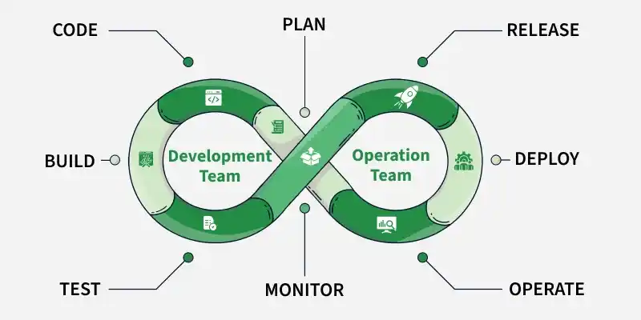

Mis on DevOps?
DevOps on tarkvaraarenduse ja IT-operatsioonide ühendatud tööviis, mille eesmärk on muuta arendus, testimine ja väljastamine kiiremaks ning tõhusamaks.
DevOps põhineb pideval integratsioonil, testimisel ja tagasisidel, et tarkvara jõuaks kasutajateni kiiremini ja stabiilsemalt.
DevOps arendustsükkel
- Planeerimine – eesmärkide ja nõuete määramine
- Arendus – koodi kirjutamine ja versioonihaldus
- Ehitus – rakenduse kompileerimine
- Testimine – vigade ja probleemide leidmine
- Väljastamine – tarkvara tootmisse viimine
- Haldamine – süsteemi töö jälgimine
- Jälgimine – tagasiside ja analüüs
DevOps tsükli joonis

Tähtsaim omadus
DevOpsi kõige tähtsam omadus on pidev automatiseerimine ja tagasiside, mis hoiab kogu süsteemi pidevas arengutsüklis.
- vead leitakse kiiremini
- arendus on stabiilsem
- meeskonnad töötavad koos
- väljalasked on kiirem
Head ja vead
| Head | Vead |
|---|---|
|
|